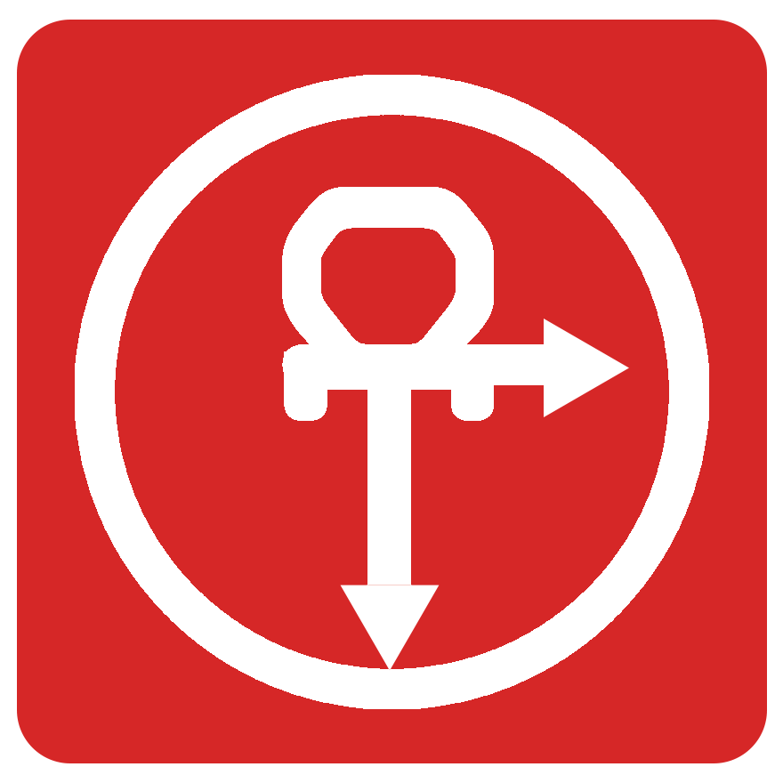

 一个任务提醒APP
这个App是为了帮助人们去创建自己的任务,为了那些对自己要做的事情有安排的而又怕忘记自己要做的事情而开发的App,这个app可以帮助您创建自己想要完成的任务，例如当您设置时间后它可以帮助您打开App，拨打电话，发送Email...省去您的操作和时间，帮助您完成一些您想完成的任务，更多的功能开发中...
如果您对这个以用有什么意见或者是对这个应用的未来应该具备那些功能有想法的话请点击这里的地址给我们进行反馈